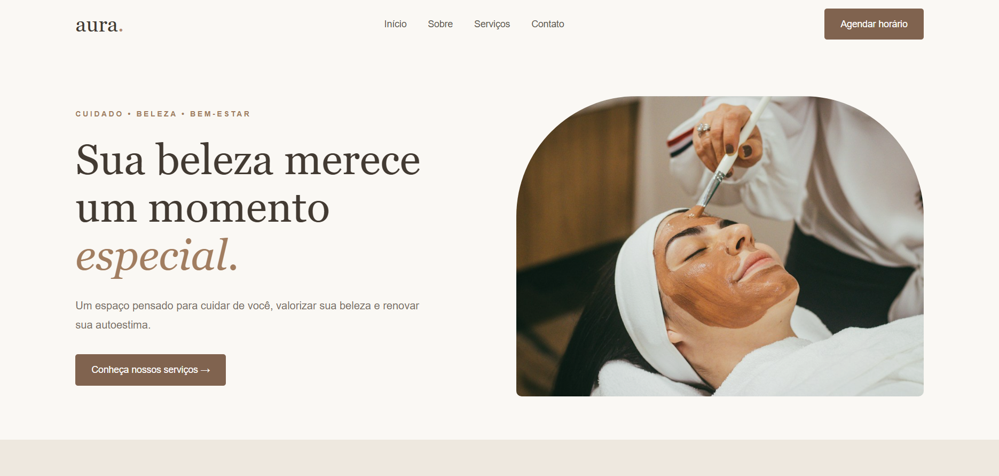
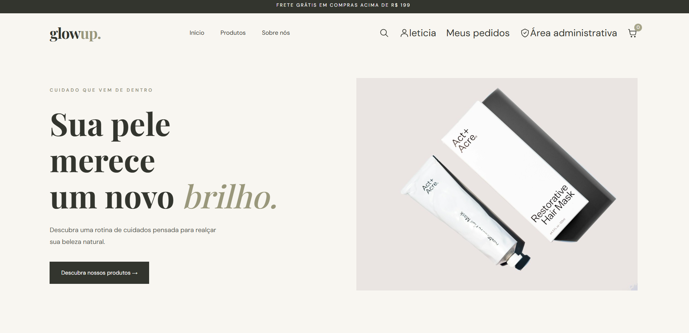

Desenvolvimento
Criação de páginas, aplicações web e integração de funcionalidades.
TECNOLOGIA, DADOS & SOLUÇÕES DIGITAIS
Exploro diferentes áreas da tecnologia para desenvolver soluções digitais, trabalhar com dados e criar experiências que aproximam pessoas e negócios.
01 / SOBRE MIM
Sou estudante de Desenvolvimento de Sistemas e tenho interesse em explorar diferentes áreas da tecnologia, como desenvolvimento web, banco de dados, análise de dados e marketing digital.
Durante minha formação, desenvolvi projetos utilizando tecnologias como HTML, CSS, JavaScript, Node.js e SQL. Também tive contato com Salesforce Marketing Cloud, CRM e automação de marketing. Atualmente, estou ampliando meus conhecimentos em ServiceNow pelo SENAI.
Gosto de aprender novas ferramentas, transformar ideias em projetos e entender como a tecnologia pode contribuir para melhorar processos e experiências.
Conheça meus projetos ↗02 / CONHECIMENTOS
Criação de páginas, aplicações web e integração de funcionalidades.
Organização, consulta e análise de informações para apoiar decisões.
Contato com ferramentas de relacionamento com clientes, campanhas e automação de marketing.
Aprendizado sobre plataformas corporativas e soluções para organização de processos.
Conhecimentos desenvolvidos por meio de estudos, cursos e projetos práticos.
03 / ÁREAS DE INTERESSE
Criação de sites e aplicações, com atenção à funcionalidade, experiência do usuário e integração de sistemas.
Interesse em bancos de dados, análise de informações, visualização de dados e soluções digitais.
Exploração de CRM, campanhas digitais, personalização de comunicação e automação de processos.
04 / PROJETOS SELECIONADOS
Projetos que demonstram meus conhecimentos em desenvolvimento web, integração de sistemas e soluções digitais.

Landing page para o segmento de estética, desenvolvida para apresentar serviços, transmitir a identidade da marca e facilitar o contato com clientes.
Projeto desenvolvido para portfólio.
Acessar projeto ↗
E-commerce de produtos de skincare desenvolvido com catálogo de produtos, autenticação de usuários, carrinho de compras, gerenciamento de pedidos e painel administrativo.
Backend integrado ao PostgreSQL com Supabase e API publicada no Render.
Esta seção será atualizada conforme novos trabalhos forem desenvolvidos.
05 / PROCESSO
Conheço ferramentas, tecnologias e diferentes possibilidades.
Organizo ideias e defino os objetivos de cada projeto.
Coloco os conhecimentos em prática e construo soluções.
Busco novos aprendizados e aprimoro minhas habilidades.
06 / CONTATO
Estou aberta a conhecer novas oportunidades, compartilhar ideias e conversar sobre projetos e tecnologia.